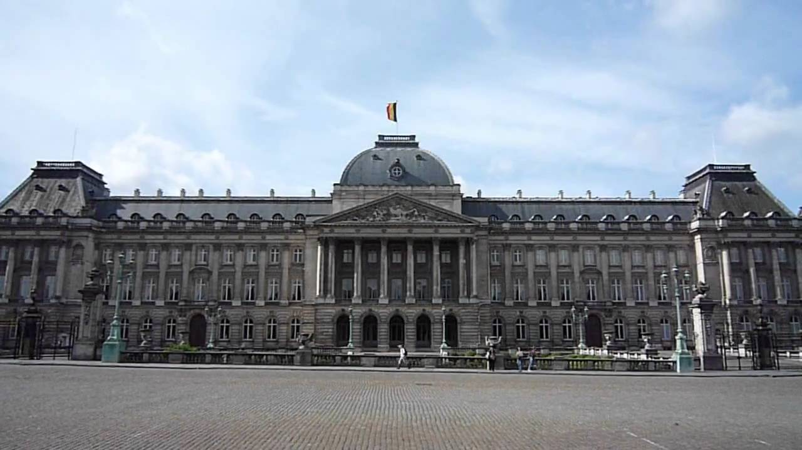
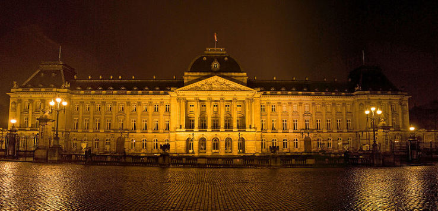

BELAGAVI
1.The Gokak Falls


The Gokak Falls is a waterfall located on the Ghataprabha River in Belagavi district of Karnataka, India.
The waterfall is six and a half kilometers away from Gokak town.
After a long winding course, the Ghataprabha river takes a leap of 52 metres (171 ft) over the sandstone
cliff amidst a picturesque gorge of the rugged valley, resembling Niagara Falls on a smaller scale.
The waterfall is horse shoe shaped at the crest, with a flood breadth of 177 metres (581 ft).
2.Kamal Basadi, Digambar Jain Temple


The Kamal Basadi is one of the two Jain temples inside the Belgaum Fort. There is another Jain temple here called the
Chikka Basadi, but that temple is currently in ruins.Belgaum has for long been a center for Jainism, and the region
houses many Jain saints and scholars. The kings of various dynasties that ruled this region practiced or patronized
Jainism. There are many Jain temples here and mentions of many more are found in inscriptions.
This Basadi is now administered by the Archaeological Department.
Belgaum has for long been a center for Jainism, and the region houses many Jain saints and scholars. The kings of various dynasties
that ruled this region practiced or patronized Jainism. There are many Jain temples here and mentions of many more are found in
inscriptions. This Basadi is now administered by the Archaeological Department.
3.Military Mahadev Temple


Located on the Camp Road in Belgaum in Karnataka, Military Mahadev Temple is one of the prime attractions in the city
that has been built and maintained by the Indian Army. Founded in 1955 by Lieutenant General S.M. Shrinagesh,
General Officer, and Commander-in-Chief Southern Command, the temple is situated in the heart of a lush green park.
In addition to that, there is also a play area for the kids.
Military Mahadev Temple has undergone several renovations and modifications through the years and the dome has been
completely changed. There is a religious ritual practised every Monday called Samuhik Panchamrit, also called as the
collective offering of the Panchamrit. This Panchamrit is made of four important elements - honey, yogurt, ghee, and
sugar. The most important festival celebrated here is Mahashivratri.
4.The Royal Palace Of Brussels


The history of the Royal Palace in its current form is not very old; it was built in 1900 at the request of King Leopold II.
However, the ruins under the palace, on which it was built, are centuries old. These ruins are remnants of Coudenberg Palace,
a very old palatial complex dating back to the 11th century. It was a home of the Dukes of Brabant who together with other
successors extended and improved the palace for many centuries. Unfortunately, this prestigious complex was destroyed by a fire
in 1731.
Almost 50 years after the disaster, there were four separate buildings built on the ruins. Two of them were connected by a
colonnade from the initiative of King William II of the Netherlands. It was already built in the neoclassical style with a peristyle,
under the supervision of Belgian architect Tilman-François Suys.
5. Ramakrishna Mission Ashram


Located in the Belgaum Fort compound, Ramakrishna Mission Ashram is a calm and quiet place serving as a retreat to its
visitors from the bustle of Belgaum. The building where Swami Vivekananda stayed for nine days when he visited Belgaum in 1892
was handed over to the Ramakrishna Mission for Spiritual and Social purposes. The ashram was built in 2001, right after the renovation
of the existing was completed.
The Ashram now has a Sharada Mantapa which constitutes for the kitchen, dining hall and a residence for the Monks.
Ramakrishna Mission Ashram organises numerous welfare activities, lectures, daily Bhajans, meditation classes to educate,
inspire and provide peace to visitors.
6.Rajhansgad Yellur Fort